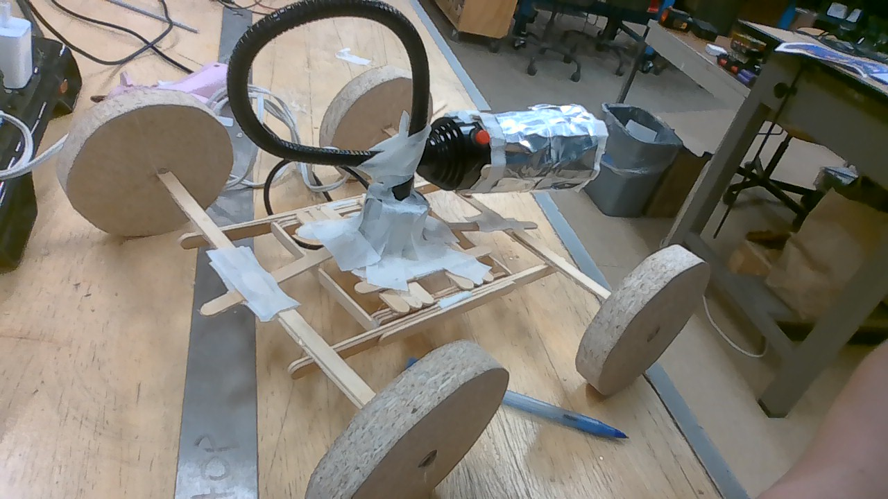

This is a home made light magnifier that is way to bright to look at directly if you are 5 ft away. Use it against your enimies if they are close enough.
This uses alluminum to relect some of the lost light, and then a magnifying glass to magnifyn the light back into the center. This allows the light to become very bright increasing blindness.